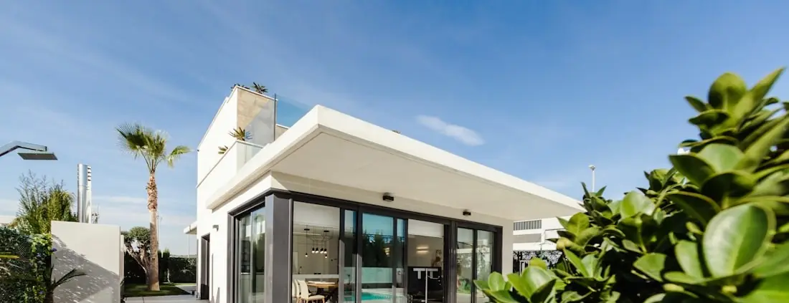
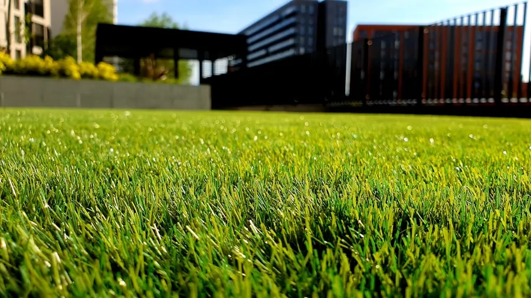
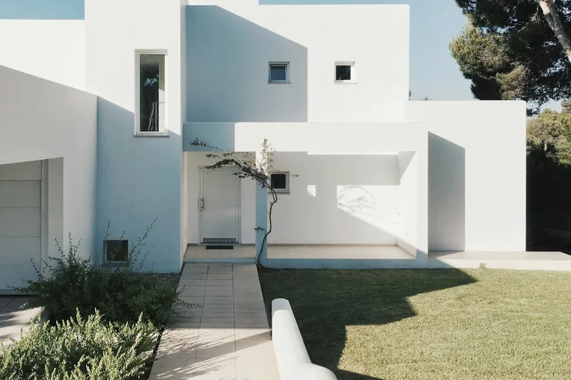

North Broward
Outdoor Remodeling Contractor in Coral Springs, FL
One yard, four sets of demands, and a pool in the middle of it. The design is mostly a negotiation.
The backyard has four users and they disagree
Coral Springs was built out largely as planned suburban housing, and the rear yards reflect it: enclosed, a reasonable size, very often with a pool already in the ground and a family using the space every day of the year.
That last part is what makes these projects distinctive. The yard is not a display space. It is shared territory, and the people sharing it want different things from the same few hundred square feet. Adults want somewhere comfortable to sit that is not in full sun. Children want room to run and a route between the house and the water. A dog wants ground it cannot destroy and a boundary it cannot get through. And the pool imposes its own conditions on everything within about eight feet of it.
Design a family yard around one of those users and you get a space that works for a quarter of the household. The useful approach is to name the conflicts early, decide which zone wins where they collide, and let that drive the material choices — rather than the other way round.
The negotiation
What each user needs, and where they collide
| User | What they need | Where it conflicts |
|---|---|---|
| Adults | A comfortable seating and dining zone with cover over it, away from the splash line, with a route from the kitchen that does not cross the wet part of the deck. | The best-shaded spot is often exactly where children want open ground, and the closest spot to the kitchen is often the busiest route. |
| Children | Open ground to move on, a surface that is forgiving underfoot, and short clear routes between the door, the water and the towels. | Open ground competes with paving for area, and the shortest route to the pool is usually straight through the seating. |
| The dog | Ground that survives a repeated patrol route, drainage that copes with use, a boundary without gaps, and shade that is not the same shade the adults are using. | Turf where the lawn has failed, planting the dog will get into, and a gate that has to work for people and hold against an animal. |
| The pool | A surround graded away from the water, finishes chosen for wet feet, and whatever enclosure the property is required to have. | It sets non-negotiable conditions in the middle of the yard, and its requirements outrank everyone's preferences. |
Decide the collisions on site
Where the shade falls at four in the afternoon, where the dog actually walks, and which door the children really use are things you know and a drawing does not. Those three facts settle most of the layout before any material is chosen.
The fixed point
Pool surroundings in a yard people live in
Traction, stated honestly
Nothing is slip-proof. Finishes differ in how much grip they keep when wet, and texture is where most of that difference comes from. In a family yard the wet routes matter more than the average of the whole deck: the steps out of the water, the run to the door, the corner where towels end up. Those specific paths are worth treating deliberately, sometimes with a different finish from the rest.
Heat, also stated honestly
Every paved material gets hot in direct sun, and pale ones get hot slightly more slowly. On a deck used by bare feet all summer, the reliable fix is cover over part of it and a hose before the busiest hours — not a product sold on the promise of staying cool.
Where the water goes
The surround is graded away from the pool so splash-out and rain leave rather than carrying dirt back over the coping. Where the deck is boxed in by the house and a boundary, that may mean a drainage run, which is designed at the start because retrofitting one means lifting the deck.
Overlay or rebuild
Where a surround is already there and dated, the first question is whether the slab beneath it is sound and stable. If it is, an overlay may work, provided the extra height still suits the coping, the thresholds and any enclosure. If it has moved, an overlay inherits the movement. The pool decks page goes through that decision properly.
On barriers, plainly
A fence is not automatically a pool barrier. Requirements around residential pools are set by the authority that reviews the work and depend on the property, and an ordinary privacy or boundary fence may not meet them.
We confirm what applies to your address before anything is designed, and we will not tell you a product complies on the strength of what it is made of. A barrier is also one layer among several, and none of them replaces supervision.

The floor
Pavers, and why units suit a busy yard
Most of the hard surface in one of these yards is doing several jobs at once — dining area, route to the pool, the strip children run along, the place the grill stands. It gets used harder than a display terrace ever will, and that shapes what is worth specifying.
Individual units can be lifted. Where something settles, where a root eventually gets underneath, or where a service has to be reached, a unit-paved surface can be opened and relaid with the same materials. Concrete poured across the same spot cracks once and stays that way.
What sits underneath is still the job. A surface stays flat because the ground was dug out, built up and compacted properly, and because the perimeter holds it together. That is true anywhere and it is tested hardest where the traffic never stops — the paver installation page sets out the method in full.
Format and texture are practical choices here. A texture that keeps traction wet, joints that stay full under traffic, and a format that suits the size of the area are all decisions with consequences you feel daily, rather than a colour preference.
The transitions are where quality shows. Deck to lawn, paving to turf, terrace to threshold: each junction needs both sides to agree on a finished level, or it becomes the place water collects and someone catches a toe.
The upgrade people underestimate
Shade decides how much of the yard you actually use
One good zone beats four umbrellas
A single covered area over the seating and serving zone changes the usable hours of the whole yard. Spreading cover thinly across the space tends to shade nothing properly.
Filtered or solid
Two different products for two different habits: a pergola breaks up the light while leaving the space feeling open, and a tiki hut puts real cover over a single destination.
Its position is an early decision
Anything with a foundation has to be sited before the surface around it is laid, which puts the shade conversation at the start of a project rather than the end of one.
Check the sun on site
Where shade lands at the hours you use the yard is not obvious from a plan. It is the difference between shading the loungers and shading the fence.
Shade near water needs thought
Cover close to a pool has to work with sightlines across the water and with whatever enclosure the property has. It is a layout question as much as a comfort one.
It helps the dog too
An animal outside for much of the day needs somewhere shaded that is not the seating area. Planning that in avoids a negotiation later.
Ground and boundary
Turf where grass loses, fencing that contains
Turf, for the parts that keep failing
In a yard with children and a dog, grass does not fail evenly — it fails on the routes and under the equipment. Those are the areas artificial turf is genuinely good at, and they are usually a fraction of the lawn rather than all of it.
Built for that use, it means a base that drains freely, an infill and fibre chosen for pets, dense anchoring at every edge a claw can reach, and a rinsing routine. The honest trade is heat: synthetic fibre in open sun gets hotter than living grass, which is another argument for putting the turf where the shade is.
Fencing, and what it is for
Containment and screening are different briefs. Holding a dog is about gaps, ground clearance and gate hardware; blocking a specific sightline is about height and position, and often needs a shorter run than people assume. Fencing covers the material choice once the purpose is settled.
Where a pool is involved the enclosure question is separate again, governed by requirements rather than preference, and confirmed for the property rather than claimed from a catalogue.

Complete transformation
Resolving all four claims in one plan
A family yard done piecemeal tends to accumulate compromises. The deck gets rebuilt, and a year later a structure has to be squeezed in where the footings can go rather than where the shade is needed. The turf goes down, and then the fence line moves. Each decision was reasonable and the result is a yard that argues with itself.
Doing it as one project is not about spending more at once. It is about resolving the conflicts before anything is built: which zone gets the shaded corner, where the wet route runs, which part of the lawn stays grass, and where the boundary and the gates fall relative to all of it.
The build sequence then follows the usual discipline — levels and drainage, anything buried, footings, surfaces, then turf, boundary and finishing. Where a pool contractor is also involved, the pool's finished levels govern the deck's, and both trades work to one set of levels rather than two.
Phasing is entirely reasonable on that basis. Deciding as you go is what produces the argumentative yard.
Design for the climate
A yard in use all year
The afternoon is the constraint. A yard used by a family every day is used at the hottest part of it. That makes built cover a functional requirement here rather than a finishing touch.
Summer rain empties the yard and then fills the low spot. Storms arrive quickly and leave standing water wherever the grades allow it. On ground with little natural fall, where the water goes is designed rather than assumed.
Wet surfaces are a daily condition, not an occasional one. With a pool in constant use, part of the deck is wet most days. Finish selection and the layout of the wet routes both follow from that.
Sun and use age different things. Fibres, coatings, joint material and hardware all wear faster in a yard that is used hard. It is worth knowing what will need attention and when, rather than being surprised by it.
Storm season affects what you own. What is anchored, what is freestanding and what gets brought in belongs in the design conversation, particularly where there are structures and furniture around water.
How it runs
From competing demands to a built yard
-
Ask who uses what
Ages, animals, how the pool is used, which door everyone comes out of, and where people already sit. This conversation does more for the layout than any measurement.
-
Assess the yard as it stands
How the current surround is holding up, what the enclosure is fixed to, which corner floods, how much of the lawn is genuinely alive, and the state of the gates.
-
Resolve the collisions
Which zone wins the shaded corner, where the wet route crosses, which lawn stays grass and which becomes turf. Agreed before materials are discussed.
-
Confirm what governs the water
What the authority requires of a barrier at your property, plus municipal permitting and anything a community association has to approve.
-
Specify and write it down
Materials and finishes chosen for wet use, pet use and hard traffic, with a written scope covering what is performed and what is coordinated.
-
Build around the household
Ground, buried services, footings, surfaces, turf, boundary and finishing — with access, site security and where the pets go agreed in advance, then a walkthrough at the end.
Examples
The elements this page has been describing


About these photographs
They stand in for the elements described here. We do not present them as work we have completed, and we are not claiming any of them was taken in Coral Springs. Photographs of verified projects will be published as such once there are some.
Common questions
Questions from Coral Springs homeowners
Which surface is safest around a pool with young children?
There is no such thing as a slip-proof surface, and an installer who offers you one has stopped advising and started selling. Finishes vary in how much grip survives once they are wet, and most of that variation comes down to texture rather than material. Around children the more useful questions are usually about layout: where the wet routes run, whether the route from the pool to the door crosses a step, and whether there is somewhere to stand that is not the edge. Traction is one factor among several, and none of them substitutes for supervision.
Will artificial turf survive a dog that uses the yard all day?
It handles that use better than sod does, provided the installation is built for it from the ground up. The base has to drain freely rather than hold liquid, the perimeter needs dense anchoring wherever a claw can get underneath, and the area wants rinsing as a routine rather than occasionally. The fibre is not what smells. What smells is whatever has been left sitting in the base or the infill, which is why free drainage and a rinsing habit do more than any product feature. Tell us about the dog before the specification is written, not after.
Can one fence keep the dog in and enclose the pool?
Those are two different jobs and it is a mistake to assume one product does both. Containing an animal is about gaps, ground clearance and gate hardware. A barrier around water is governed by requirements rather than preference — concerned with things such as height, what a small child can climb or pass through, and how gates behave unattended — and an ordinary boundary or privacy fence may satisfy none of them. Before anything is designed we establish what your particular property has to satisfy, with the body that reviews it — and no product gets described to you as compliant ahead of that.
How much shade does a family yard actually need?
Less area than people expect, in the right place. One well-positioned covered zone over where adults sit and where food gets served does more than a scattering of umbrellas across the whole yard. What matters is where the shade lands at the hours you use the space, which is worth checking on site rather than inferring from a plan — the sun in the middle of the afternoon is in a very different place from where a drawing suggests.
Pavers or concrete around the pool?
We install paver surrounds, so treat this as a partial answer and weigh it accordingly. What is genuinely true of unit paving is that individual units can be lifted and relaid where something moves or a service has to be reached, which a poured slab cannot offer, and that a wider range of textures and formats is available. Concrete comes up on this page mainly because it is what a great many existing surrounds are made of. If you have already decided on concrete, say so and we will give you an honest view of whether we are the right contractor for it.
How disruptive is this with children and pets at home?
Enough to plan around, which is why we plan around it. Where the access route runs, which days the yard is genuinely unusable, how the site is secured overnight, and where pets will be while gates are open are all agreed before the first day rather than negotiated during it. On a yard with a pool there is a further point: what happens to the pool enclosure or barrier while work is in progress needs settling up front, not improvising.
Tell us who uses the yard
Ages, animals, how the pool gets used and where everyone already sits. A free on-site visit in Coral Springs, and a layout that settles the conflicts before anything is built.